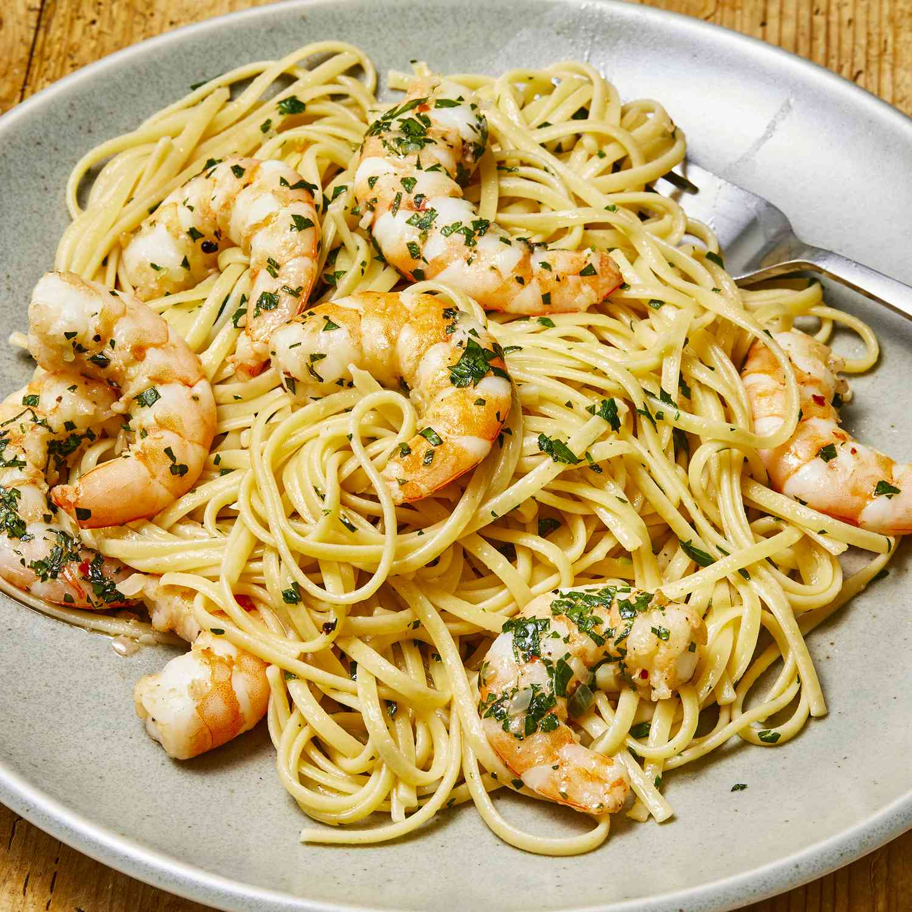

Shrimp Scampi with Pasta

Description
Shrimp scampi with linguine is the ultimate seafood pasta dish. Works with any pasta; angel hair is less filling.
This quick and easy shrimp scampi pasta recipe is an Allrecipes fan-favorite,
with more than one thousand ratings and hundreds of reviews. And it's ready to serve in only 40 minutes.
Read on to get tips to make the best shrimp scampi with pasta — it's a top-rated recipe that's simple
enough for weeknight dinners and fancy enough for a dinner party.
Ingredients
- 1 (16 ounce) package linguine pasta
- 2 tablespoons butter
- 2 tablespoons extra-virgin olive oil
- 2 shallots, finely diced
- 2 cloves garlic, minced
- 1 pinch red pepper flakes (Optional)
- 1 pound shrimp, peeled and deveined
- 1 pinch kosher salt and freshly ground pepper
- ½ cup dry white wine
- 1 lemon, juiced
- 2 tablespoons butter
- 2 tablespoons extra-virgin olive oil
- ¼ cup finely chopped fresh parsley leaves
- 1 teaspoon extra-virgin olive oil, or to taste
Steps
- Bring a large pot of salted water to a boil; cook linguine in boiling water until
nearly tender, 6 to 8 minutes. Drain.
- Melt 2 tablespoons butter with 2 tablespoons olive oil in a large skillet over
medium heat. Cook and stir shallots, garlic, and red pepper flakes in the hot
butter and oil until shallots are translucent, 3 to 4 minutes. Season shrimp with
kosher salt and black pepper; add to the skillet and cook until pink, stirring
occasionally, 2 to 3 minutes. Remove shrimp from skillet and keep warm.
- Pour white wine and lemon juice into skillet and bring to a boil while scraping
the browned bits of food off of the bottom of the skillet with a wooden spoon.
Melt 2 tablespoons butter in skillet, stir 2 tablespoons olive oil into butter
mixture, and bring to a simmer. Toss linguine, shrimp, and parsley in the butter
mixture until coated; season with salt and black pepper. Drizzle with 1 teaspoon
olive oil to serve.